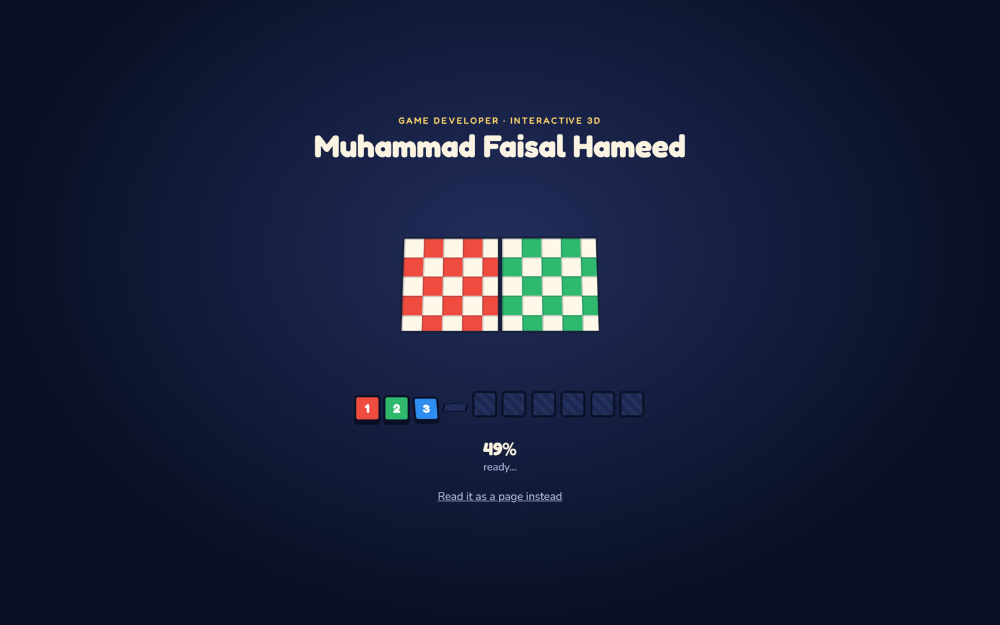
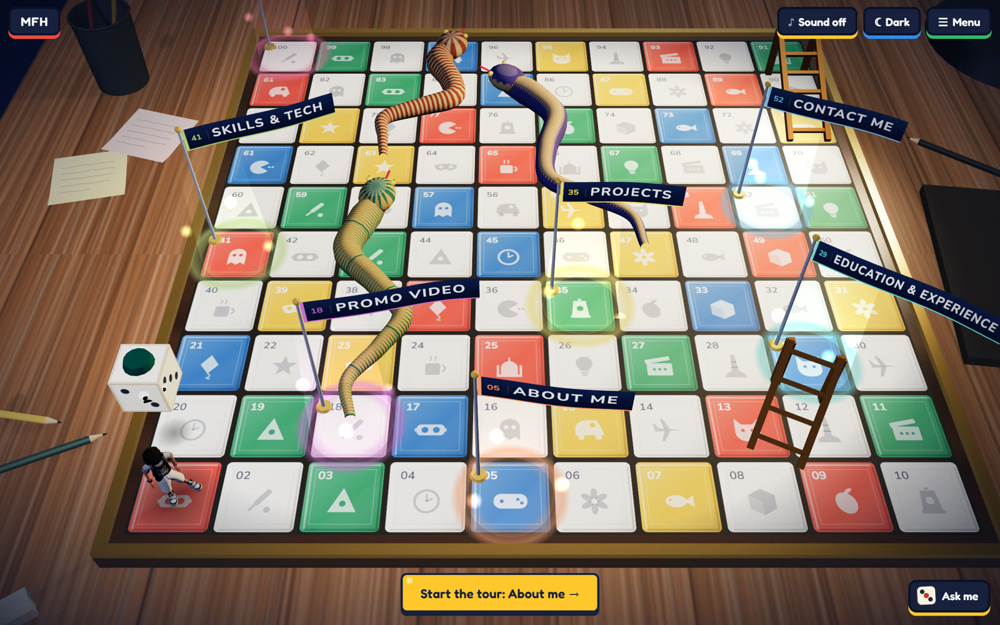
The brief asked for an interactive 3D portfolio with a custom Blender avatar, an After Effects promo video, a RAG chatbot, a working contact form and a live deployment. I built all six modules into one idea: my portfolio is a life-size Snakes & Ladders board at night. My avatar stands on tile 1. A talking dice called Pappu Pansa rolls the way, and each roll takes me to a glowing tile that holds one section of the portfolio. Every trip uses a different animation: rolling, climbing a ladder, sliding, jumping, walking, getting knocked down a snake, and finally flying to tile 100.
| Module (from the brief) | Status | Where it is and how it is met |
|---|---|---|
| 1. 3D web portfolio | Done | Home (the board), About, Education & experience, Projects (12, with filters), Skills, Contact, plus the Video tile and tile 100. Smooth camera trips between tiles. Desktop, tablet and phone layouts. Sections 3–5. |
| 2. Custom 3D avatar (Blender → GLB) | Done | avatar.glb, 1.08 MB, 18 Mixamo animations, skin tone adjusted, used live on the site with every clip. .blend in the repo. Sections 6–7. |
| 3. Promo video (After Effects) | Done | 40 s, 1920×1080, 30 fps, H.264 + AAC. Faisal_AE.aep and Faisal_AE.mp4 in the repo; a compressed copy plays on the Video tile. Section 8. |
| 4. RAG chatbot | Done | Pappu Pansa: 52 chunks, Google embeddings, cosine retrieval, Gemini answers with source chips, English / Urdu / Roman Urdu, voice in and out, a "How it works" panel. Section 9. |
| 5. Email and contact | Done | Form with front-end and server validation, honeypot, rate limit, Brevo REST API, keys in environment variables. Section 10. |
| 6. Deployment and documentation | Done | Vercel with continuous deployment from GitHub main. README, PLAN.md, DEVLOG.md and this report. Section 11. |
I study Gaming & Animation, so I wanted the portfolio itself to feel like a game, but it still has to work as a portfolio: a recruiter must find any section in one or two clicks. A board game solved both. Everyone already knows how Snakes & Ladders works, so nobody needs a tutorial, and the board gives every section a fixed, visible place.
I did not get there first time. The git history shows nine earlier concepts I built and dropped (a PS1-style game table, an open world with a drivable car, a cutaway tower, a floating island, a retro platformer, a silent-film street and a space-jazz ship among them). Each taught me something I kept: never blurry, easy to navigate, every animation used, and a real day/night style toggle.
| Tile | Section | Dice | How the avatar gets there | Clips |
|---|---|---|---|---|
| 1 | Start | – | Turns to the camera and waves | Wave, Idle |
| 5 | About me | 4 | Rolls forward across four tiles | Roll |
| 29 | Education & experience | 3 | Walks to the ladder on tile 8 and climbs it | Walk → Climb |
| 35 | Projects | 6 | Run-up, then slides in and bumps the hologram | Run → Slide |
| 41 | Skills & tech | 6 | Six jumps, tile to tile | Jump |
| 52 | Contact | 6 + 5 | Walks eleven tiles (a 6 rolls again) | Walk |
| 18 | Promo video | 6 | Runs to 58, a snake knocks him down, slides to 18 | Run → Fall → Slide |
| 100 | Play with the dice | – | Flies to the last tile; a real game can start | Fly |
The site opens on a folded Ludo board that unfolds while the files download, with a row of ten tiles that flip over as a loading bar. When it is ready, the camera hands over to the 3D board on a wooden study table. Seven tiles glow, each marked by a flag with its title.
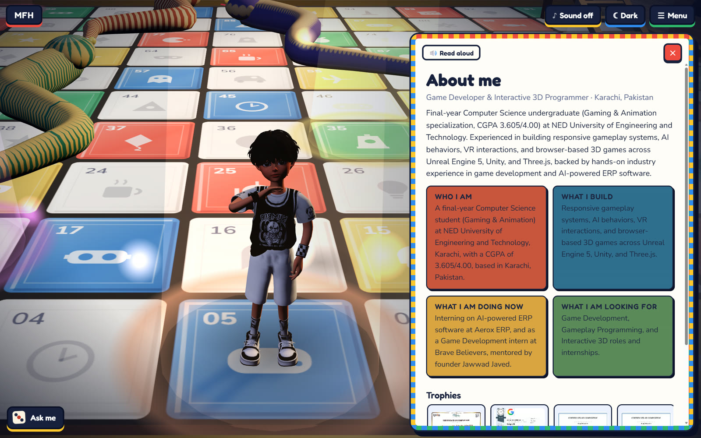
He rolls in, turns and waves. Bio, "who I am / what I build / what I'm doing now / what I'm looking for", trophies, CV and GitHub.
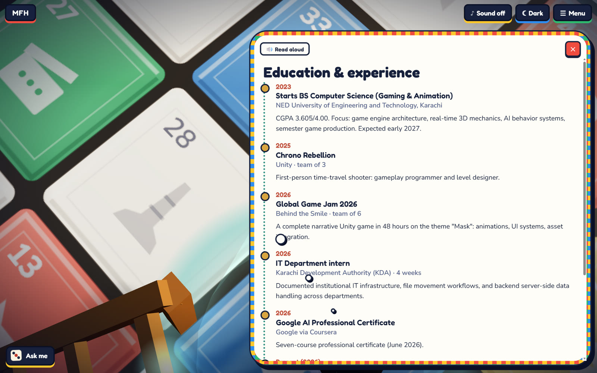
After the ladder climb the camera moves close; a timeline covers NED, internships (Aerox ERP, Brave Believers, KDA), the game jam and certificates.
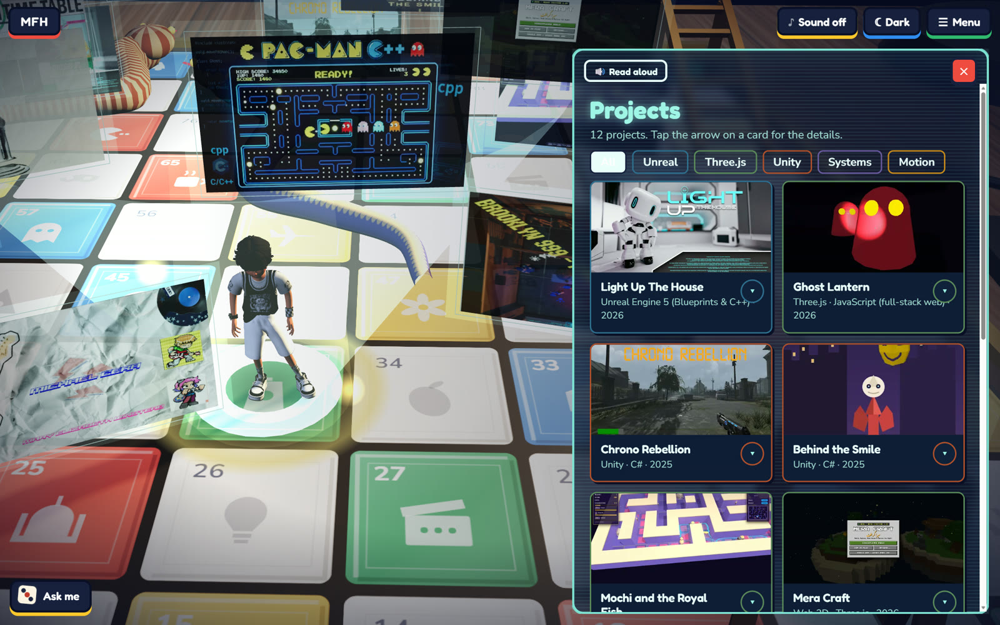
A hologram rises over the tile with floating 3D project cards. The panel lists 12 projects with filters (Unreal, Three.js, Unity, Systems, Motion); each card opens details and links.
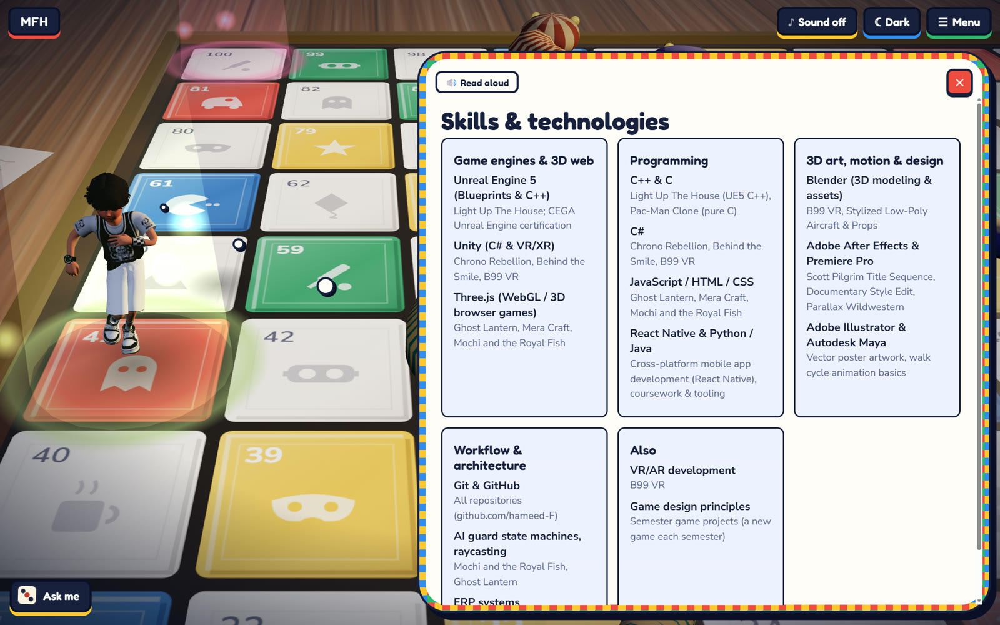
Six hops in, then a dance. Skills are grouped (engines, programming, 3D and motion, workflow, VR) and each skill names the projects that prove it.
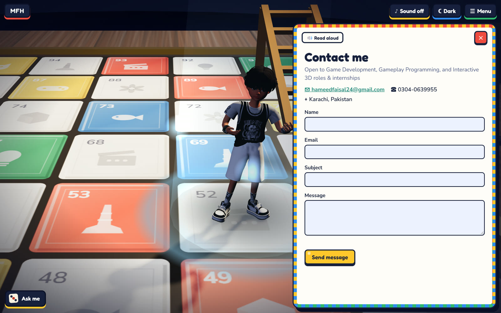
He talks while the form sits beside him: name, email, subject, message. A successful send plays Victory.
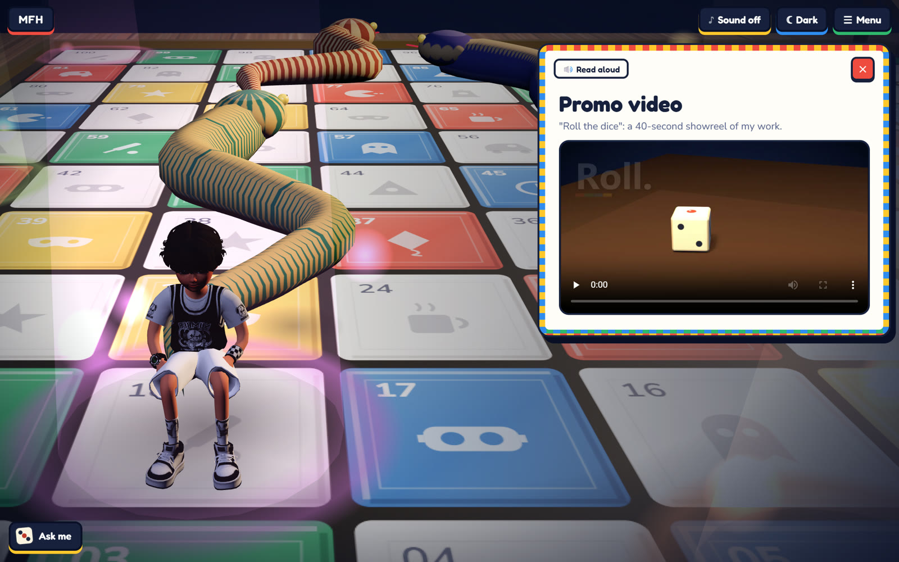
Knocked down the snake, he sits dizzy while the showreel plays. The video downloads only when Play is pressed.
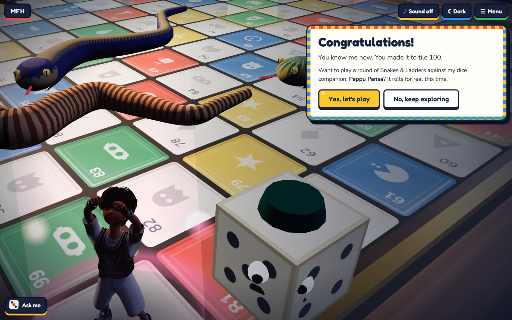
"Congratulations, you know me now!" Yes starts a real Snakes & Ladders game against the dice (random rolls, Throw / Victory / Disappointed clips).
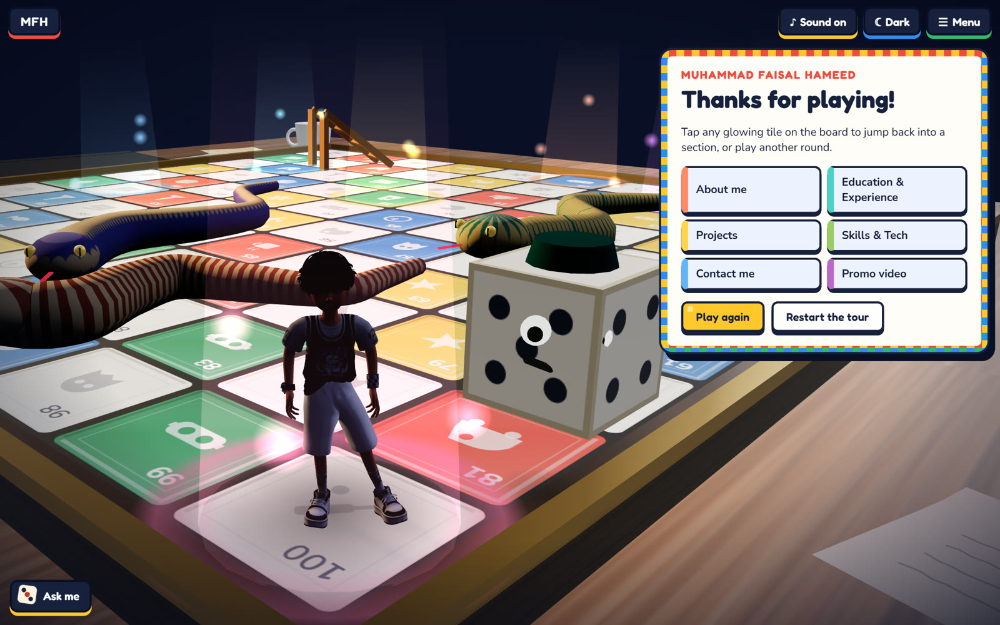
Faisal big on screen, cycling his animations, with buttons to every section, Play again and Restart the tour.
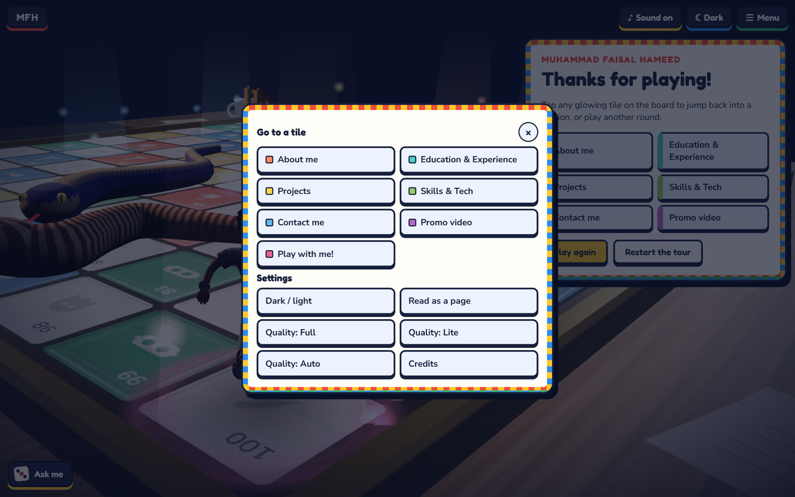
Keyboard users can Tab through buttons and close panels with Esc. Closing a section zooms back out to the whole board, so the visitor always sees where they are.
All text lives in src/content.js, taken only from my own documents (CV, project write-ups, certificates). The same HTML is used for the 3D section screens, the plain text version and the chatbot's knowledge base, so the three never disagree.
| Brief requirement | Where on the site |
|---|---|
| Home: name, intro, profile | Loader (name and title), board, About tile, home screen |
| About me | Tile 5 |
| Skills & technologies | Tile 41 |
| Projects & achievements gallery | Tile 35 hologram (12 projects, filters) + trophies strip on tile 5 (6 certificates, open full size) |
| Education & experience | Tile 29 |
| Contact | Tile 52 |
| Smooth animations and transitions | Eased camera trips, cross-faded clips, unfolding loader, panel slide-ins |
| Responsive (desktop, tablet, phone) | Section 5 |
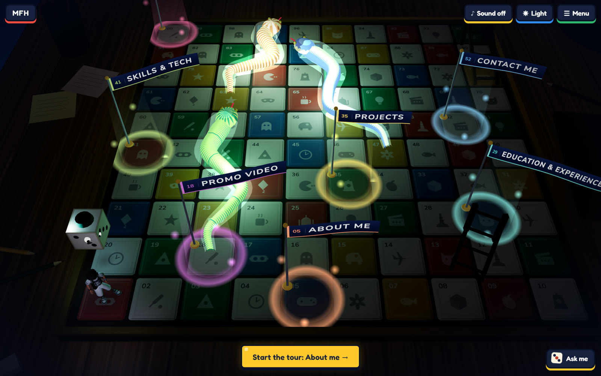
Dark mode is not just a colour swap. The ambient and fill lights drop almost to nothing, each snake gets an emissive pulsing skin and casts its own coloured light on the board, and a soft light follows Faisal so he stays visible. The UI switches to its dark palette at the same time.
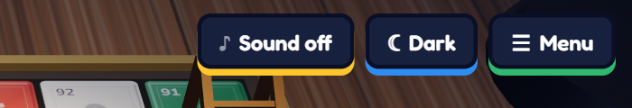
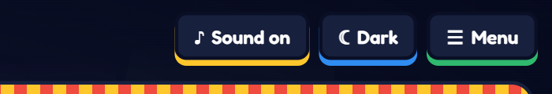
All audio is generated live with the Web Audio API (no audio files): a quiet night tune plus effects tied to the clips (footsteps, ladder, roll, landing, slide, whoosh, fall, dice rattle, a chime when a section opens). Off by default, remembered between visits, and the music ducks while text is read aloud.
Lite renders at a lower pixel ratio, drops real shadows, uses fewer props and smaller textures and caps at 30 fps. It turns on automatically on weak or slow devices (section 12) and can be chosen in the menu.
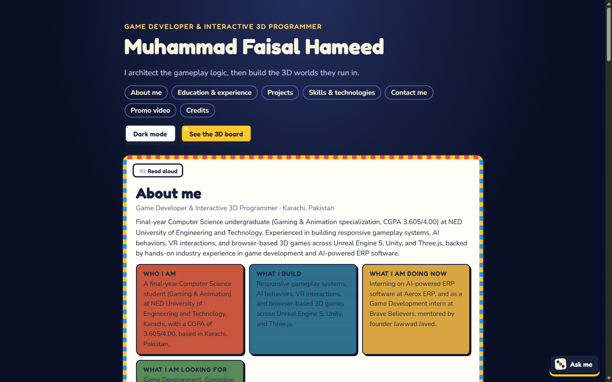
The text version is the same content as a clean, readable page with read-aloud on every section. It is used when WebGL is missing or only a software renderer is available, when the graphics driver crashes, when a device struggles even in Lite, or whenever the visitor chooses "Read it as a page". It is also the screen-reader friendly path.
Phones get their own layout rather than a shrunk desktop. Icons replace the chip labels, the avatar stays in the top part of the screen and panels become bottom sheets. The camera is framed taller so the board fits portrait screens, and every button is a large tap target. Screens below were captured on the live site with phone emulation (390×844, touch).
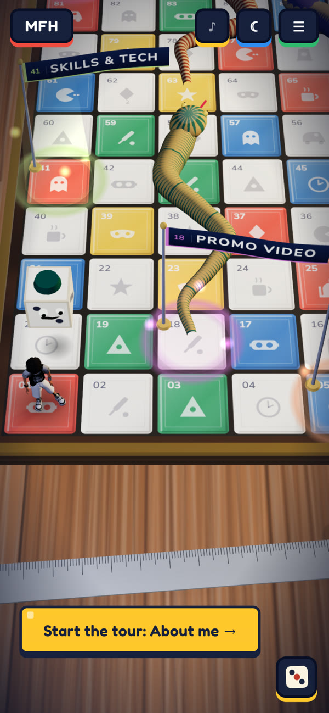
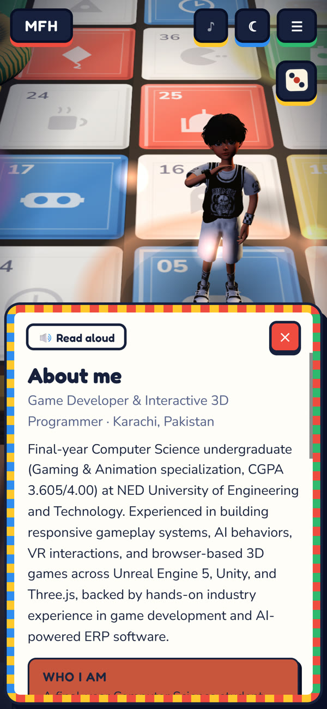
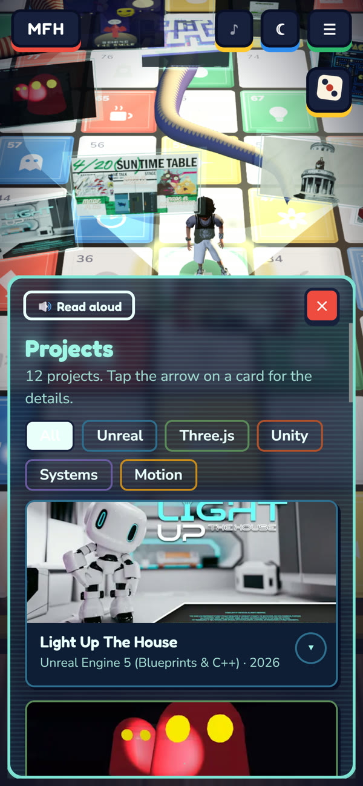
| Device | Layout |
|---|---|
| Laptop / desktop | Half avatar, half panel; hologram and bubbles centred; chip labels shown. |
| Tablet | Same idea with a narrower panel. |
| Phone (portrait) | Avatar at the top, bottom-sheet panels, taller camera framing, icon-only HUD chips, full-width chat. |
The avatar is a rigged character with a Mixamo skeleton (65 mixamorig: bones). I worked only on a copy (avatar_work.blend), never the original file. In Blender I imported the Mixamo clips, cleaned them up so they play in place, adjusted the skin tone and exported one GLB with every animation.
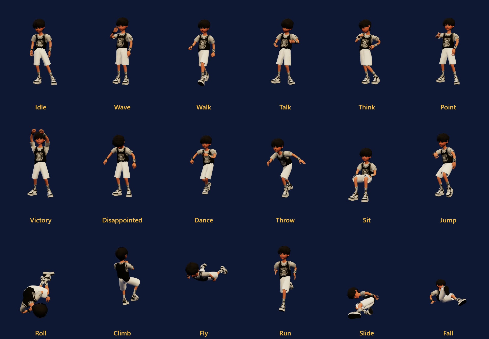
mixamorig: skeleton; every Mixamo FBX matched every bone.scripts/pack-avatar.mjs (drops channels that stay at rest, resamples keys, meshopt compression).| Fact | Value |
|---|---|
| Final file | avatar.glb, 1,077,340 bytes (1.08 MB) |
| Before packing | 3.38 MB (avatar_uncompressed.glb) |
| Sent over the network | ~647 KB (server compression, measured) |
| Geometry | 9 skinned meshes, ~31.8k triangles |
| Textures | 8, WebP, ≤ 1024 px |
| Clips | 18 (Idle, Walk, Run, Climb, Fly loop) |
| Brief limit | ≤ 5 MB ✓ |
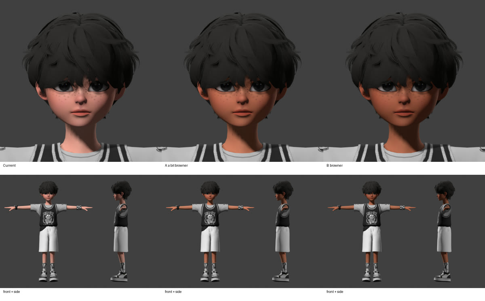
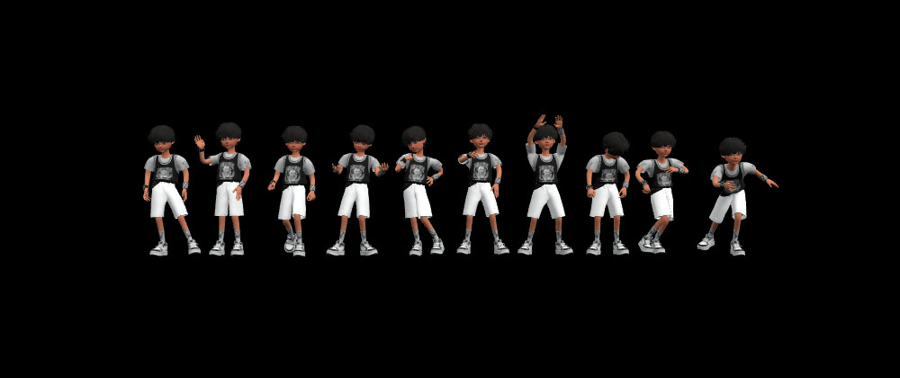
For the promo video I rebuilt the site's board in Blender using the site's own textures and layout (extracted from the live board), so the reel matches the website exactly. The dice, snakes, ladders and the avatar were rendered with Eevee at 1920×1080: 1,114 transparent PNG frames across nine shots, named by reel frame so they drop straight into the edit.
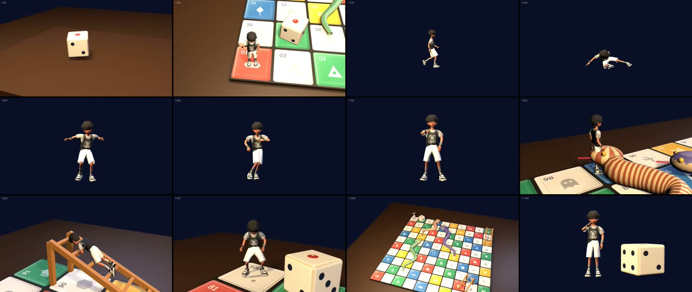
Blender was driven through the Blender MCP add-on's local socket, which let me script imports, NLA set-up, exports and renders while keeping the original file untouched. The working file is deliverables/blender/avatar_work.blend.
"Roll the dice" is a 40-second showreel that plays one turn of Snakes & Ladders and introduces me through my projects. Cuts land on a 120 BPM beat grid (one beat = 15 frames), a small tile counter sits bottom-left, and the dice lands on the very last beat so the reel loops cleanly.
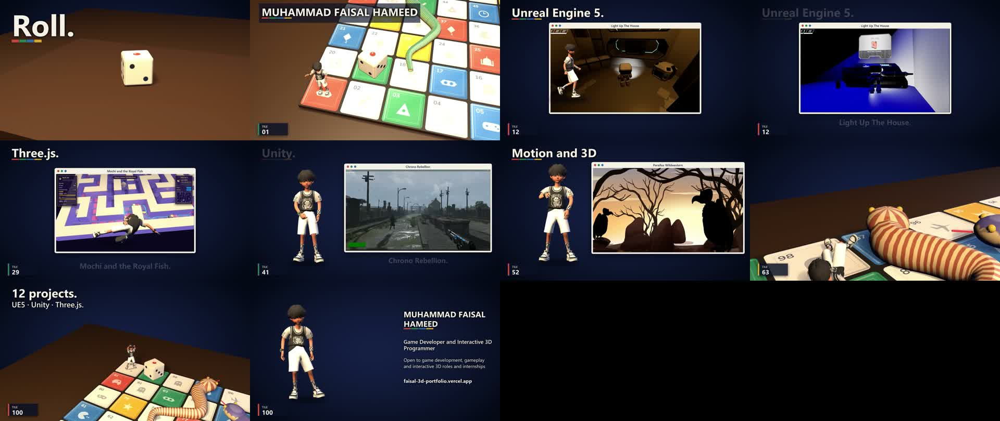
| Shot | What happens |
|---|---|
| 1 | The dice drops: "Roll." |
| 2 | The board unfolds, Faisal waves, name and title type on |
| 3–4 | Unreal Engine 5, Three.js projects in "monitor" frames; the avatar slide wipes between them |
| 5 | Unity: Chrono Rebellion, then the 48-hour game jam (Behind the Smile) |
| 6 | Motion and 3D work, the avatar points at each screen |
| 7 | The snake fall, then the ladder climb with the internships |
| 8 | Victory on tile 100: "12 projects. UE5 · Unity · Three.js." |
| 9 | End card: name, role, what I'm open to, the site URL |
| Spec | Value |
|---|---|
| Project | Faisal_AE.aep (114 KB) |
| Master | Faisal_AE.mp4, 73.5 MB |
| Format | 1920×1080, 30 fps, exactly 40.0 s |
| Codecs | H.264 (~14.7 Mbps) + AAC stereo |
| On the site | 720p web copy, 4.3 MB, 6 kB poster, loads only on Play |
| Typography | Bold sans titles with an RGBY underline, matching the site |
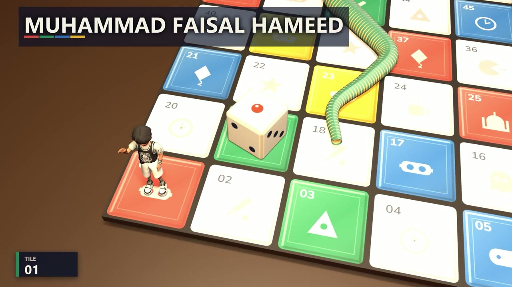
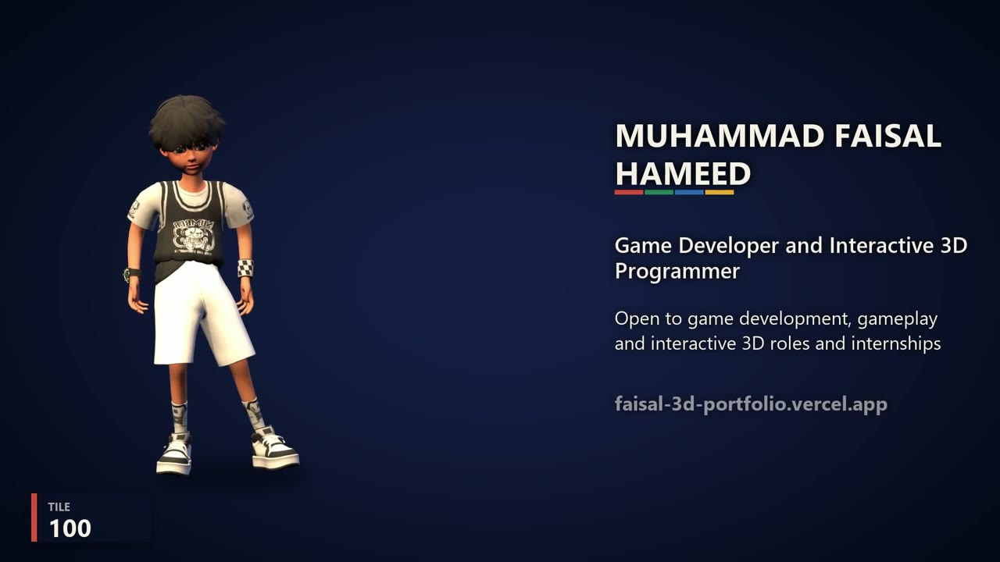
The chatbot is not a pop-up box: it is the dice that walks with my avatar. Its name, Pappu Pansa, is a playful Pakistani name (pansa is a dice in Urdu). Click the dice or the "Ask me" button to chat. While it thinks, it spins; when it answers, it hops. It answers only from my portfolio and shows which passages it used.
gemini-embedding-001 (768-d). The index ships with the function, so there is no work at cold start.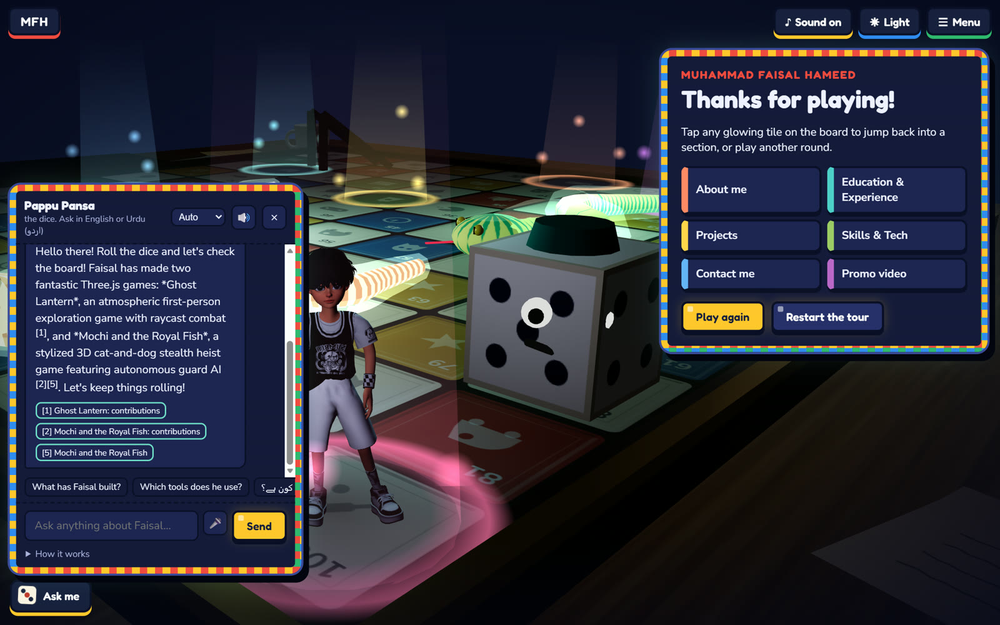
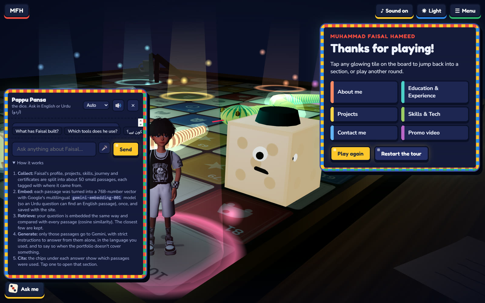
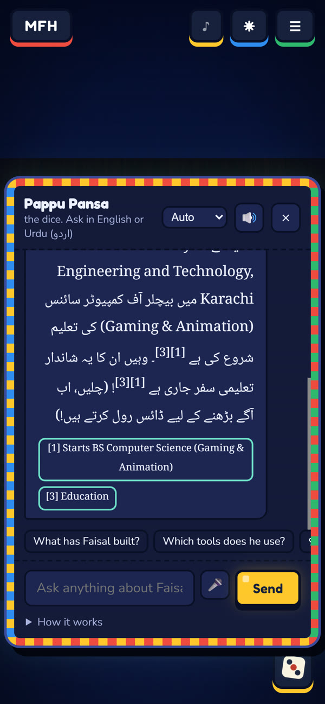
process.env), never sent to the browser.On the day of testing, Google's API sometimes returned 503 "high demand" or stalled past the timeout. The fix: hedged requests with back-off retries, and if every attempt fails, an answer built directly from the retrieved passages (still cited) instead of an error. A local stress test then answered 12 of 12 questions in English, Urdu and Roman Urdu.
| Requirement | How it is met |
|---|---|
| Name, email, subject, message | All four fields, labelled |
| Front-end validation | Required fields, email format, length limits, clear messages |
| Back-end validation | Same rules again in /api/contact; bad input gets HTTP 400 |
| Sends to my email | Brevo REST API (api.brevo.com/v3/smtp/email), awaited before replying; reply-to is the visitor |
| Success and error messages | Sending / sent / error states; Victory animation on success |
| Credentials in env vars | BREVO_API_KEY, CONTACT_RECEIVER_EMAIL in .env.local and Vercel; never committed |
| Spam protection | Hidden honeypot field + rate limit (5 messages / 10 min per server instance) |
| Safe input handling | Trimmed, length-capped, HTML-escaped before it goes into the email |
The API was unit-tested with a mocked Brevo for every path (405 wrong method, 400 invalid, honeypot, 200 sent, 429 rate limited, 502 Brevo error, 500 server error). After the keys were added on Vercel, a test message from the live site was accepted by Brevo with HTTP 200.
hameed-F/faisal-3d-portfolio, branch main = production.main builds (vite build) and deploys; other branches get preview URLs./api/chat, /api/contact, /api/tts run as Vercel functions with keys from the dashboard.| Layer | Tools | Why |
|---|---|---|
| 3D engine | Three.js 0.170 (GLTFLoader + Meshopt decoder) | What the course taught; full control, small bundle |
| Build | Vite 6 | Fast dev server, code splitting so the 3D loads after the first screen |
| UI | Plain HTML / CSS / JS, Google Fonts | No framework needed; tiny first download |
| Chatbot | @google/genai (Gemini embeddings + Flash-Lite) | Official SDK, server-side only |
Brevo REST API via fetch | Works on serverless (no SMTP) | |
| Speech | Web Speech API; optional Azure voice via /api/tts | Free read-aloud and voice input in the browser |
| Audio | Web Audio API | Music and effects generated in code: zero audio files |
| 3D content | Blender 5.1, Mixamo | Avatar, animations, showreel renders |
| Asset tools | glTF-Transform, meshoptimizer, ffmpeg | Compressing the avatar, images and video |
| Video | Adobe After Effects | Showreel assembly and export |
| Hosting | Vercel + GitHub | Continuous deployment, HTTPS, CDN |
src/main.js | Boot, loader, quality tiers, theme, menu, text version |
src/board/layout.js · world.js · story.js · textures.js · avatar.js | Board maths, the 3D scene, trips and screens, code-drawn textures, avatar clips |
src/panels.js · content.js | All section content (one source for 3D, text version and chatbot) |
src/chat.js · voice.js · read.js · audio.js · quality.js | Chat UI, voice, read-aloud, generated sound, tier detection and FPS governor |
api/chat.js · contact.js · tts.js | Serverless RAG chat, email, server voice |
Optimization was my top priority: a portfolio that stutters or takes ages to load loses the visitor. These numbers were measured on the live site on 24 November 2026 in a fresh (cold-cache) Microsoft Edge on my laptop.
preload="none", so it costs nothing until Play.| Tier | What changes |
|---|---|
| Full | Pixel ratio up to 2, soft shadows from the desk lamp, all props, 60 fps |
| Lite | Pixel ratio 1.25, no real shadows, fewer props, smaller textures and snakes, 30 fps cap |
| Text | No WebGL at all: the readable page |
Before loading: checks WebGL and the GPU name (software renderer → text version; older GPUs → Lite), device memory ≤ 3 GB, a 4-core touch device, Data Saver, a 2G/3G connection and the reduced-motion setting.
While running: an FPS governor waits out a warm-up, then switches Full → Lite if the frame rate stays low, with a toast to switch back; if Lite still struggles it offers the text version. A lost WebGL context falls back to the text version. The visitor's own choice in the menu is saved.
| Problem | Cause and fix |
|---|---|
| Finding a concept that was fun and easy to navigate | Nine versions were built and dropped (too grainy, too hard to navigate, no personality). The board game kept the fun and made every section one click away. |
| Snakes looked black in light mode | The snake tube's faces were wound the wrong way, so it rendered inside-out. Fixed the winding. |
| Mixamo clips that travel or are offset | Slide travelled ~6 m, Climb sat 1 m sideways and 0.8 m up, Climb and Fly faced the wrong way. Made them in place in Blender and corrected facing in code, so the code moves the avatar and his feet never skate. |
| The menu closed on every click | A document click handler matched [data-tier] on <body>. Narrowed it to button[data-tier]. |
| "The dice got stuck" in chat | Gemini sometimes returned 503 or stalled. Added hedged requests, back-off retries and a cited fallback answer from the retrieved passages. |
| Urdu read by a male English voice | Chrome on Windows has no Urdu voice and Edge names its voices in Urdu script. Now: wait for voices, prefer a female Urdu voice, speak sentence by sentence, then fall back to a server voice or Devanagari + a female Hindi voice. |
| Phone drags did nothing | The canvas lacked touch-action: none, so the browser used the gestures to scroll. |
| Test runs slowed my PC | Headless Edge test runs left ~97 browser processes running; the test script now closes its own browser. |
| Chess engine too weak in an early version | A library search managed ~400 nodes/s; I wrote a compact 0x88 engine in a worker (~250–330k nodes/s). The chess game was later removed with that concept. |
| Keeping the avatar under 5 MB with 18 clips | Dropped channels that stay at rest, resampled keys, meshopt + WebP: 1.08 MB. |
| Asset | Source | Licence / note |
|---|---|---|
| Board, tiles, emblems, dice, snakes, ladders, flags, table, props | Made by me, drawn in code (src/board/textures.js, world.js) | Original |
| Avatar model | Rigged character (Mixamo skeleton) customised in Blender: skin, scale, clips | avatar_work.blend in the repo |
| 18 animations | Adobe Mixamo (FBX "without skin") | Free to use under Adobe's Mixamo terms |
| Fonts | Fredoka, Nunito Sans, Noto Naskh Arabic (Google Fonts) | SIL Open Font License |
| Three.js, Vite, glTF-Transform, meshoptimizer | npm | MIT |
| Site music and sound effects | Generated live with Web Audio (src/audio.js) | Original, no audio files |
| Project screenshots and footage | My own projects | Mine |
| Downloaded 3D models | None in the current site | CC0 Poly Pizza models used in an earlier version are listed in the repo's asset log |
| Path | Contents |
|---|---|
/ (root) | Complete website source: src/, api/, public/, data/, scripts/, README, PLAN.md, DEVLOG.md |
deliverables/report/ | This report as PDF and its HTML source with images |
deliverables/after-effects/ | Faisal_AE.aep and the rendered Faisal_AE.mp4 |
deliverables/blender/ | avatar_work.blend (avatar with all 18 actions) |
deliverables/avatar/ | avatar.glb (final), avatar_uncompressed.glb, preview renders |
deliverables/mixamo/ | The 18 Mixamo FBX animation files |
deliverables/screenshots/ | Full-resolution screenshots of every module |